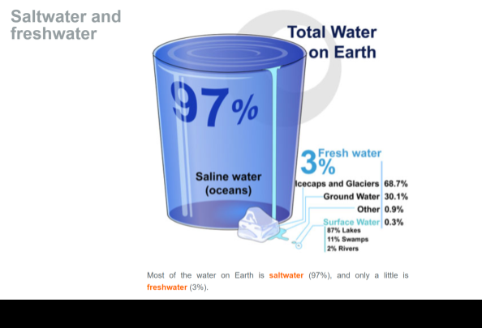

Saltwater and freshwater
97%
Saline water (oceans)
3%
Fresh water
Most of the water on Earth is saltwater (97%), and only a little is freshwater (3%).
Image by Mariana Ruiz Villarreal (LadyofHats) for the CK-12 Foundation, CC BY-NC 3.0
Focus Questions
- List three places where freshwater is found on Earth.
- What water resources contribute to Earth's surface water?